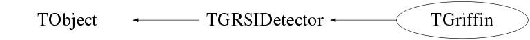

class TGriffin: public TGRSIDetector
Function Members (Methods)
public:
| TGriffin() | |
| TGriffin(const TGriffin&) | |
| virtual | ~TGriffin() |
| void | TObject::AbstractMethod(const char* method) const |
| static bool | addback_criterion_singleclover(TGriffinHit&, TGriffinHit&) |
| void | TGRSIDetector::AddHit(TGRSIDetectorHit* hit, Option_t* opt = "") |
| virtual void | TObject::AppendPad(Option_t* option = "") |
| virtual void | TObject::Browse(TBrowser* b) |
| virtual void | BuildHits(TGRSIDetectorData* data = 0, Option_t* opt = "") |
| static TClass* | Class() |
| virtual const char* | TObject::ClassName() const |
| virtual void | Clear(Option_t* opt = "all") |
| virtual TObject* | TObject::Clone(const char* newname = "") const |
| virtual Int_t | TObject::Compare(const TObject* obj) const |
| virtual void | Copy(TGriffin&) const |
| virtual void | TObject::Delete(Option_t* option = "")MENU |
| virtual Int_t | TObject::DistancetoPrimitive(Int_t px, Int_t py) |
| virtual void | TObject::Draw(Option_t* option = "") |
| virtual void | TObject::DrawClass() constMENU |
| virtual TObject* | TObject::DrawClone(Option_t* option = "") constMENU |
| virtual void | TObject::Dump() constMENU |
| virtual void | TObject::Error(const char* method, const char* msgfmt) const |
| virtual void | TObject::Execute(const char* method, const char* params, Int_t* error = 0) |
| virtual void | TObject::Execute(TMethod* method, TObjArray* params, Int_t* error = 0) |
| virtual void | TObject::ExecuteEvent(Int_t event, Int_t px, Int_t py) |
| virtual void | TObject::Fatal(const char* method, const char* msgfmt) const |
| virtual void | FillData(TFragment*, TChannel*, MNEMONIC*) |
| virtual TObject* | TObject::FindObject(const char* name) const |
| virtual TObject* | TObject::FindObject(const TObject* obj) const |
| TGriffinHit* | GetAddbackHit(const int i) |
| Int_t | GetAddbackMultiplicity() |
| bool | GetBackground() const |
| bool | GetBeamOn() const |
| int | GetCycleTimeInMilliSeconds(long time) |
| bool | GetDecay() const |
| virtual Option_t* | TObject::GetDrawOption() const |
| static Long_t | TObject::GetDtorOnly() |
| TGriffinHit* | GetGriffinHit(const int i) |
| TGRSIDetectorHit* | GetHit(const Int_t idx = 0) |
| virtual const char* | TObject::GetIconName() const |
| Int_t | GetMultiplicity() const |
| UShort_t | GetNAddbackFrags(int idx) const |
| virtual const char* | TObject::GetName() const |
| virtual char* | TObject::GetObjectInfo(Int_t px, Int_t py) const |
| static Bool_t | TObject::GetObjectStat() |
| virtual Option_t* | TObject::GetOption() const |
| static TVector3 | GetPosition(int DetNbr, int CryNbr = 5, double distance = 110.0) |
| bool | GetTapeMove() const |
| virtual const char* | TObject::GetTitle() const |
| virtual UInt_t | TObject::GetUniqueID() const |
| virtual Bool_t | TObject::HandleTimer(TTimer* timer) |
| virtual ULong_t | TObject::Hash() const |
| virtual void | TObject::Info(const char* method, const char* msgfmt) const |
| virtual Bool_t | TObject::InheritsFrom(const char* classname) const |
| virtual Bool_t | TObject::InheritsFrom(const TClass* cl) const |
| virtual void | TObject::Inspect() constMENU |
| void | TObject::InvertBit(UInt_t f) |
| virtual TClass* | IsA() const |
| virtual Bool_t | TObject::IsEqual(const TObject* obj) const |
| virtual Bool_t | TObject::IsFolder() const |
| Bool_t | TObject::IsOnHeap() const |
| virtual Bool_t | TObject::IsSortable() const |
| Bool_t | TObject::IsZombie() const |
| virtual void | TObject::ls(Option_t* option = "") const |
| void | TObject::MayNotUse(const char* method) const |
| virtual Bool_t | TObject::Notify() |
| void | TObject::Obsolete(const char* method, const char* asOfVers, const char* removedFromVers) const |
| static void | TObject::operator delete(void* ptr) |
| static void | TObject::operator delete(void* ptr, void* vp) |
| static void | TObject::operator delete[](void* ptr) |
| static void | TObject::operator delete[](void* ptr, void* vp) |
| void* | TObject::operator new(size_t sz) |
| void* | TObject::operator new(size_t sz, void* vp) |
| void* | TObject::operator new[](size_t sz) |
| void* | TObject::operator new[](size_t sz, void* vp) |
| TGriffin& | operator=(const TGriffin&) |
| virtual void | TObject::Paint(Option_t* option = "") |
| virtual void | TObject::Pop() |
| virtual void | Print(Option_t* opt = "") const |
| virtual Int_t | TObject::Read(const char* name) |
| virtual void | TObject::RecursiveRemove(TObject* obj) |
| void | ResetAddback() |
| void | TObject::ResetBit(UInt_t f) |
| virtual void | TObject::SaveAs(const char* filename = "", Option_t* option = "") constMENU |
| virtual void | TObject::SavePrimitive(ostream& out, Option_t* option = "") |
| void | SetAddbackCriterion(bool (*)(TGriffinHit&, TGriffinHit&) criterion) |
| void | SetBackground(Bool_t flag = kTRUE) |
| void | SetBeamOn(Bool_t flag = kTRUE) |
| void | TObject::SetBit(UInt_t f) |
| void | TObject::SetBit(UInt_t f, Bool_t set) |
| static bool | SetCoreWave() |
| void | SetDecay(Bool_t flag = kTRUE) |
| virtual void | TObject::SetDrawOption(Option_t* option = "")MENU |
| static void | TObject::SetDtorOnly(void* obj) |
| static void | TObject::SetObjectStat(Bool_t stat) |
| void | SetTapeMove(Bool_t flag = kTRUE) |
| virtual void | TObject::SetUniqueID(UInt_t uid) |
| virtual void | ShowMembers(TMemberInspector&) |
| virtual void | Streamer(TBuffer&) |
| void | StreamerNVirtual(TBuffer& ClassDef_StreamerNVirtual_b) |
| virtual void | TObject::SysError(const char* method, const char* msgfmt) const |
| Bool_t | TObject::TestBit(UInt_t f) const |
| Int_t | TObject::TestBits(UInt_t f) const |
| virtual void | TObject::UseCurrentStyle() |
| virtual void | TObject::Warning(const char* method, const char* msgfmt) const |
| virtual Int_t | TObject::Write(const char* name = 0, Int_t option = 0, Int_t bufsize = 0) |
| virtual Int_t | TObject::Write(const char* name = 0, Int_t option = 0, Int_t bufsize = 0) const |
protected:
| virtual void | TObject::DoError(int level, const char* location, const char* fmt, va_list va) const |
| void | TObject::MakeZombie() |
| virtual void | PushBackHit(TGRSIDetectorHit* ghit) |
private:
| void | ClearStatus() |
| void | SetBitNumber(TGriffin::EPPG ppg, Bool_t set) |
| Bool_t | TestBitNumber(TGriffin::EPPG ppg) const |
Data Members
public:
| enum EPPG { | kTapeMove | |
| kBackGround | ||
| kBeamOn | ||
| kDecay | ||
| kCycleStartTime | ||
| }; | ||
| enum TObject::EStatusBits { | kCanDelete | |
| kMustCleanup | ||
| kObjInCanvas | ||
| kIsReferenced | ||
| kHasUUID | ||
| kCannotPick | ||
| kNoContextMenu | ||
| kInvalidObject | ||
| }; | ||
| enum TObject::[unnamed] { | kIsOnHeap | |
| kNotDeleted | ||
| kZombie | ||
| kBitMask | ||
| kSingleKey | ||
| kOverwrite | ||
| kWriteDelete | ||
| }; |
private:
| vector<TGriffinHit> | addback_hits | ! Used to create addback hits on the fly |
| long | fCycleStart | ! The start of the cycle |
| UChar_t | fGriffinBits | |
| static long | fLastPPG | ! value of the last ppg |
| static bool | fSetCoreWave | ! Flag for Waveforms ON/OFF |
| vector<UShort_t> | faddback_frags | ! Number of crystals involved in creating in the addback hit |
| static TVector3 | gCloverPosition[17] | ! Position of each HPGe Clover |
| TGriffinData* | grifdata | ! Used to build GRIFFIN Hits |
| vector<TGriffinHit> | griffin_hits | The set of crystal hits |
Class Charts



Function documentation
bool addback_criterion_singleclover(TGriffinHit& , TGriffinHit& )
void SetAddbackCriterion(bool (*)(TGriffinHit&, TGriffinHit&) criterion)
{ addback_criterion = criterion; } TGriffin()
void FillData(TFragment* , TChannel* , MNEMONIC* )
Fills the "Data" structure for a specific channel with TFragment frag.
void PushBackHit(TGRSIDetectorHit* ghit)
TGRSIDetectorHit* GetHit(const Int_t idx = 0)
TGriffinHit* GetGriffinHit(const int i)
Int_t GetAddbackMultiplicity()
Automatically builds the addback hits using the addback_criterion (if the size of the addback_hits vector is zero) and return the number of addback hits
TGriffinHit* GetAddbackHit(const int i)
void BuildHits(TGRSIDetectorData* data = 0, Option_t* opt = "")
Builds the GRIFFIN Hits from the "data" structure. Basically, loops through the data for and event and sets observables.
This is done for both GRIFFIN and it's suppressors.
TVector3 GetPosition(int DetNbr, int CryNbr = 5, double distance = 110.0)
Gets the position vector for a crystal specified by CryNbr within Clover DetNbr at a distance of dist mm away. This is calculated to the most likely interaction point within the crystal.
void ResetAddback()
Used to clear the addback hits. When playing back a tree, this must be called before building the new addback hits, otherwise, a copy of the old addback hits will be stored instead.
UShort_t GetNAddbackFrags(int idx) const
Get the number of addback "fragments" contributing to the total addback hit
with index idx.
void SetBitNumber(TGriffin::EPPG ppg, Bool_t set)
bool SetCoreWave()
static bool SetBGOHits() { return fSetBGOHits; } //! static bool SetBGOWave() { return fSetBGOWave; } //!
{ return fSetCoreWave; }